la copia de seguridad de los datos de la aplicación
la carpeta de la aplicación (comprimida en un zip)
Las capturas deben ser capturas de toda la pantalla en formato png en las que se vea la URL de la página y no quepa duda de que se ha realizado en el ordenador del alumno.
1. Descargar la aplicación
Aplicación: Joomla 3.0.3 (03/02/13). Joomla es un gestor de contenidos.
Descomprimir Joomla en la carpeta joomla. La aplicación se abrirá en el navegador con la dirección joomla/index.php.
2. Instalar Joomla
Entrar en phpMyAdmin como usuario root y crear un usuario de MySQL con nombre iwb_joomla_1, contraseña iwb_joomla_1 y base de datos iwb_joomla_1.
Abrir en el navegador la dirección joomla/index.php.
En la pantalla de configuración:
Nombre del sitio: WebApps
Descripción: El portal de las aplicaciones web
Correo del administrador: admin@example.com
Nombre de usuario del administrador: admin
Contraseña del administrador: admin
Hacer una captura de la pantalla de inicio y guardarla como joomla_01.png:
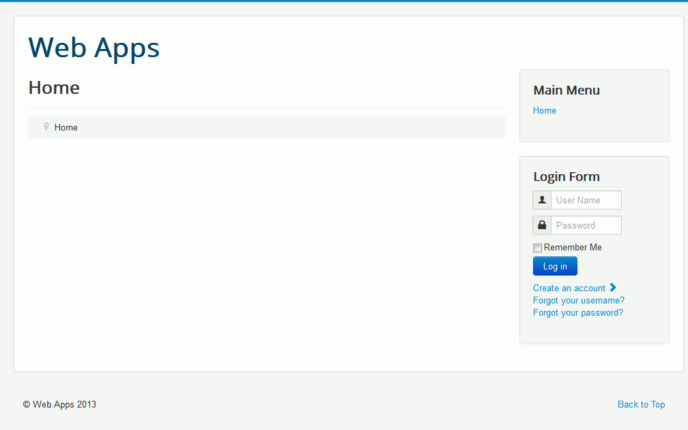
3. Entrar como administrador
Cerrar el navegador, volver abrir la página jommla/index.php y entrar como administrador:
Hacer una captura de la pantalla de inicio y guardarla como joomla_02.png:
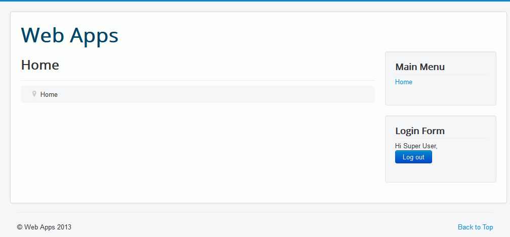
Mirar los nombres de las carpetas que hay en la carpeta joomla y deducir la url que hay que abrir para poder entrar en el panel de control.
Hacer una captura de la pantalla de entrada y guardarla como joomla_03.png:
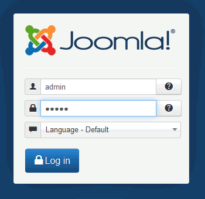
4. Enlace para entrar como administrador
En el menú principal crear una opción de menú nueva que permita acceder a la pantalla de login del administrador.
Hacer una captura de la pantalla de creación de la opción de menú y guardarla como joomla_04.png:
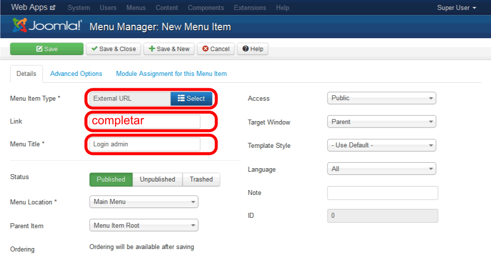
Hacer una captura de la pantalla de inicio y guardarla como joomla_05.png:
Instalar el archivo de idioma español y activarlo como predeterminado.
Hacer una captura de la pantalla de inicio y guardarla como joomla_06.png:
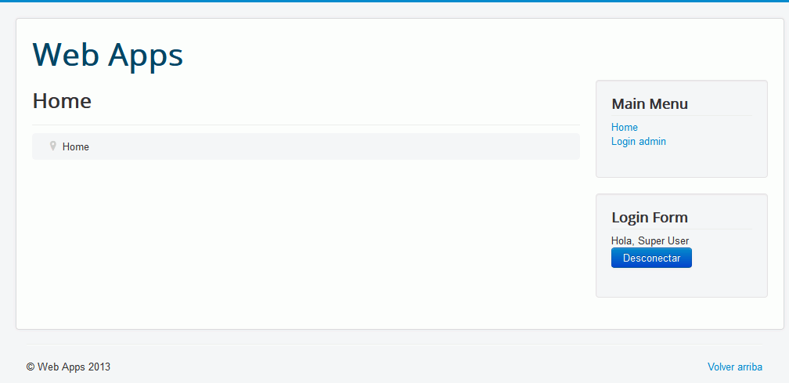
6. Usuario y Menú de usuario
Crear un usuario editor1 con contraseña editor1, que pertenezca al grupo de usuarios Publisher:
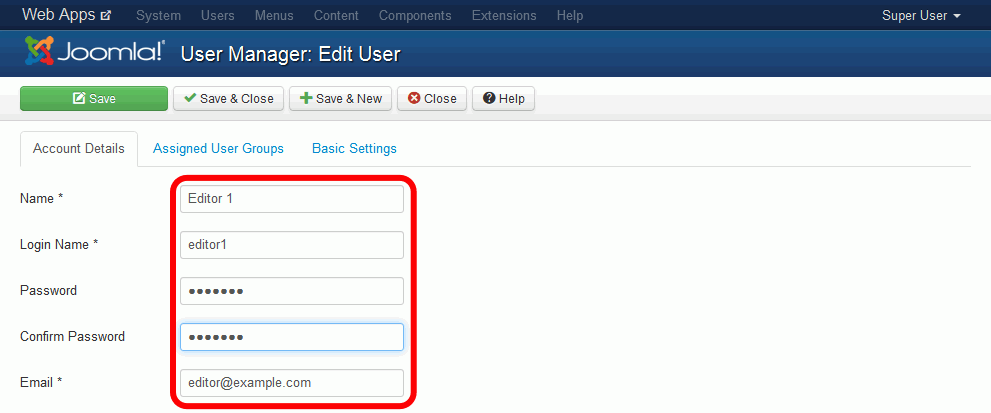
Hacer una captura de la lista de usuarios y guardarla como joomla_07.png:
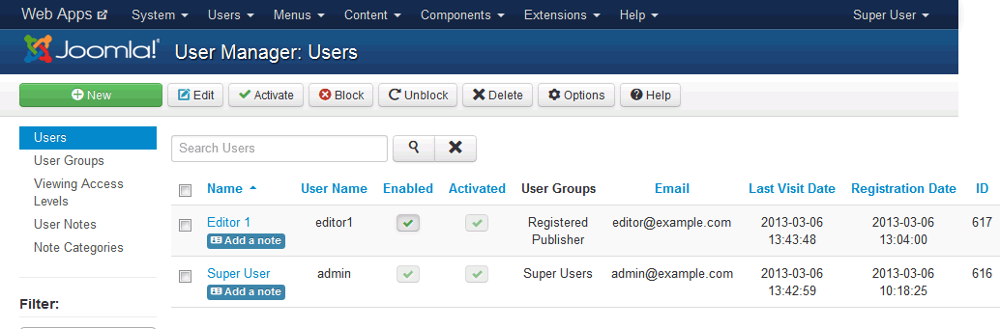
Crear un menú llamado Menú de usuario y de tipo usermenu:
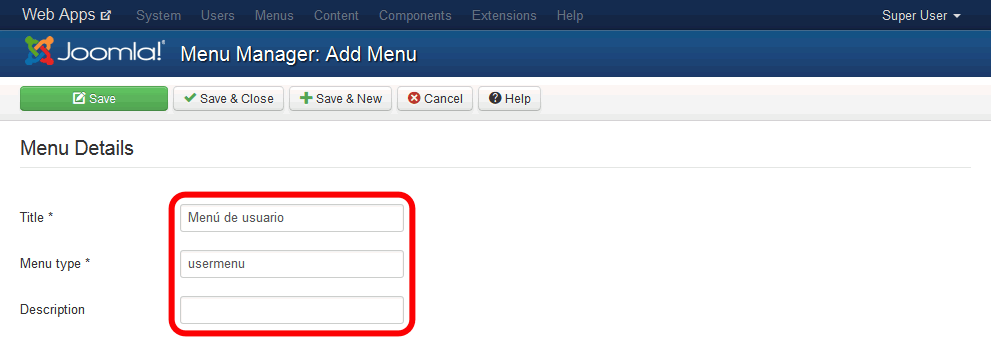
En ese menú crear una opción de menú Crear artículo que se muestre en la posición position-7 y que sólo esté disponible para usuarios registrados.
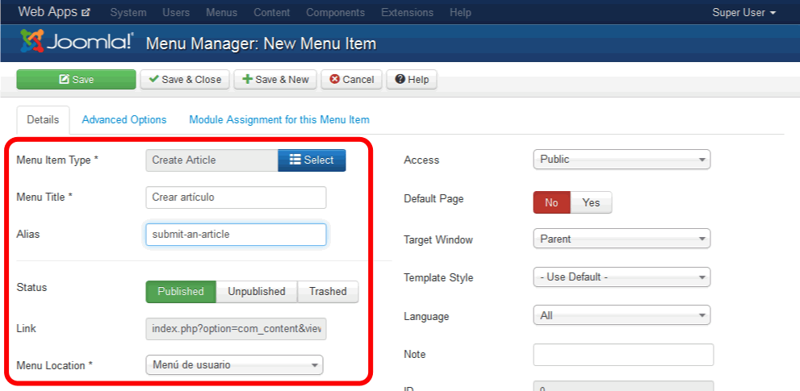
Hacer una captura de la lista de menús y guardarla como joomla_08.png:
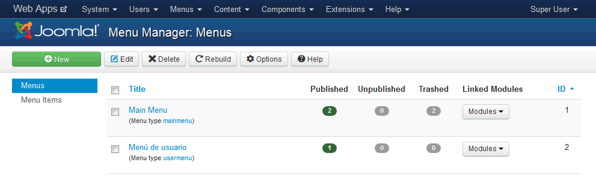
Hacer una captura de la lista de opciones del menú de usuario y guardarla como joomla_09.png:
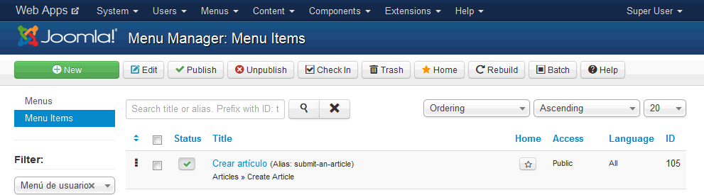
Entrar como usuario editor1 y hacer una captura de la página de inicio y guardarla como joomla_10.png:
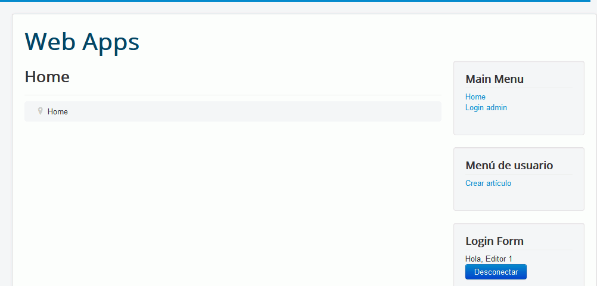
7. Copia de seguridad
Entrar en phpMyAdmin como usuario iwb_joomla_1, elegir la base de datos iwb_joomla_1 y exportar la tabla con el método rápido al fichero iwb_joomla_1.sql.